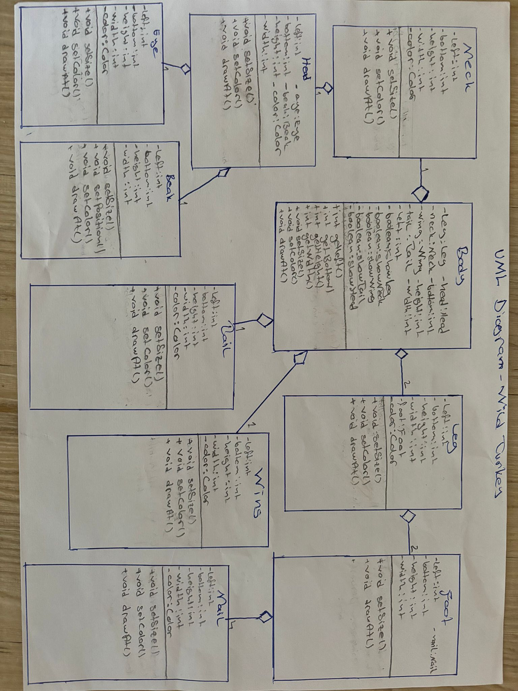

Wild Turkey: Java Object-Oriented GUI Application
This project is a Java-based graphical application developed in Eclipse that models and renders a wild turkey. The application was built iteratively to demonstrate strict adherence to core Object-Oriented Programming principles, code conventions, and design patterns.
Architecture & Implementation Details
Domain Model

- Object-Oriented Modeling: Designed a UML class diagram to map out the parts and wholes of the animal domain. The hierarchy consists of domain classes with a depth of 3, utilizing aggregates and composites to model the turkey's anatomical components.
- Graphical User Interface (GUI): Integrated a control panel with interactive buttons allowing users to modify the visual depiction (colors, sizes, and shapes) of the turkey objects.
- State Machine Design Pattern: Implemented the State design pattern to control different graphical states of the application, driven by user inputs from the GUI buttons.
- Scene Management & Inheritance: Utilized an ArrayList within a dedicated
Sceneclass to manage multiple instances on the screen, applying theLocatedRectangleinterface to evaluate spatial intersections. Overloaded rendering methods and random number generators were used to introduce visual variations between instances.